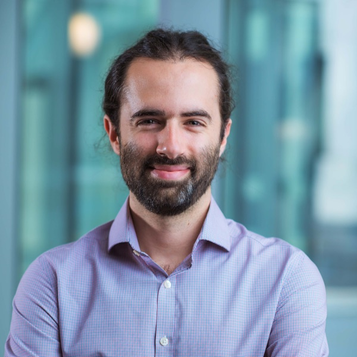

Postdoctoral Fellow · Harvard Medical School
How do cells process information — and how do we reprogram them?
I measure protein and gene function at scale to learn how cells process information — then engineer what I learn into new ways to control cells.
About

I build high-throughput technologies to measure protein and gene function at scale, and to learn how cells process information. I'm a postdoctoral fellow at Harvard Medical School, in the labs of Michael Greenberg and Martin Pollak, where I develop pooled methods to read out the functions of secreted proteins at scale.
I earned my Ph.D. in Genetics at Stanford University with Michael Bassik and Lacra Bintu, supported by an NIH F99/K00 fellowship and the NSF Graduate Research Fellowship. There I built pooled screens that measure the functions of thousands of human protein domains, mapping transcriptional effectors and engineering compact tools to switch genes on and off.
I also helped co-found Stylus Medicine, which is developing recombinase-based in vivo genetic medicines for cancer.
Research
Interests
-
Measure protein function at scale
I build scalable synthetic-biology methods — pooled screens — that read out the functions of many proteins and gene-regulatory elements at once. This is the discovery engine: one experiment becomes a map of what each part does.
-
Model how cells process information
I use those measurements to work out how cells read molecular signals — including secreted proteins and ligands — and turn them into gene regulation and changes in cell state.
-
Manipulate cells with new tools
I turn what I learn into new ways to reprogram cells — engineering recombinases and transcriptional effectors to rewrite gene expression, and building toward new therapeutics.
Selected work
Publications
-
2024
Development of compact transcriptional effectors using high-throughput measurements in diverse contexts
-
2022
Systematic discovery of recombinases for efficient integration of large DNA sequences into the human genome
-
2020
High-throughput discovery and characterization of human transcriptional effectors